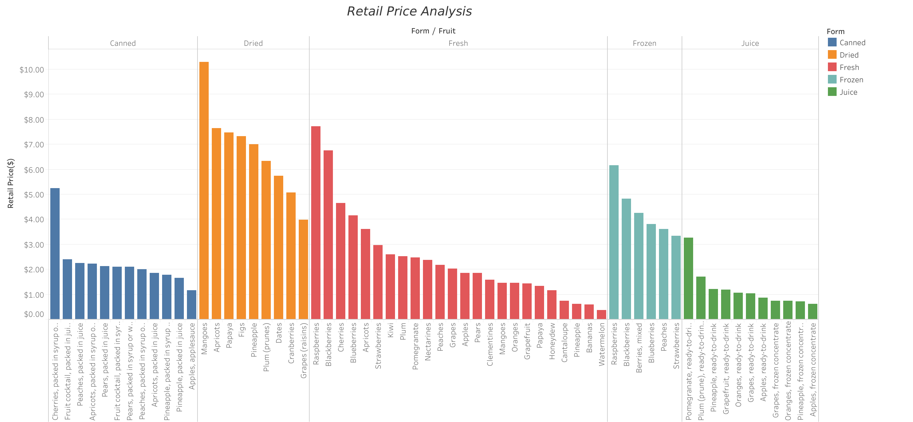
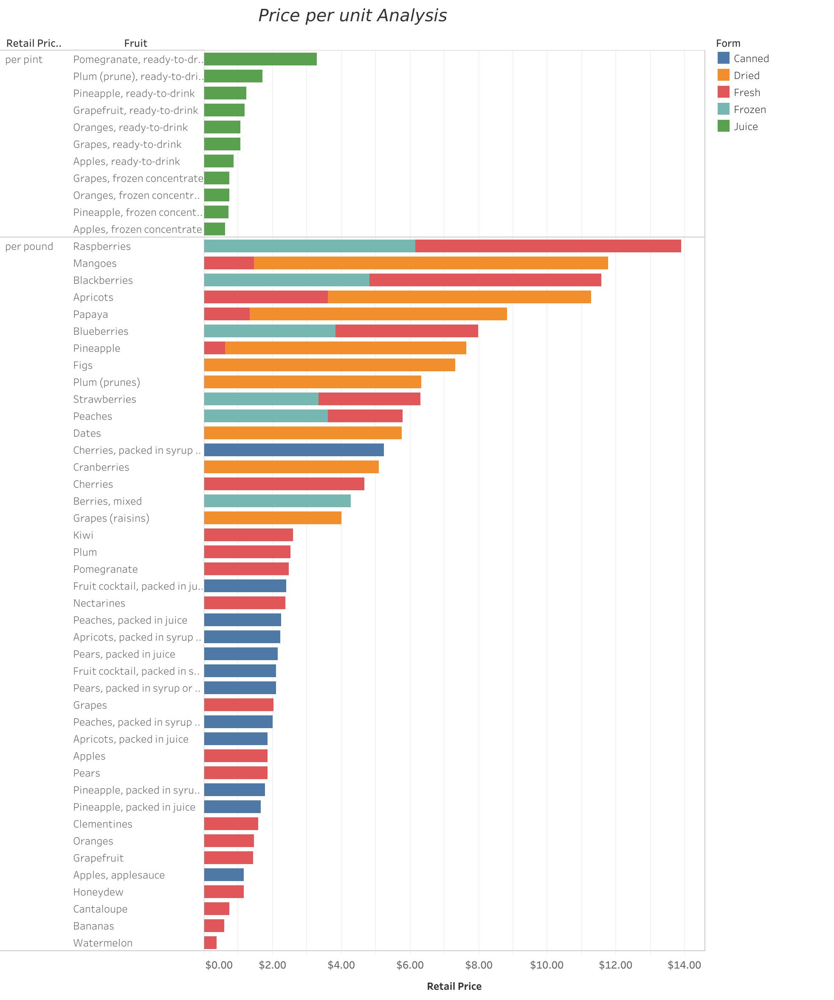
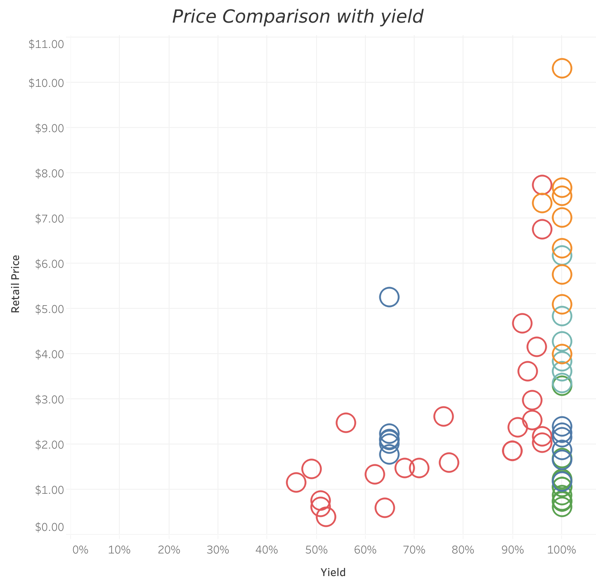
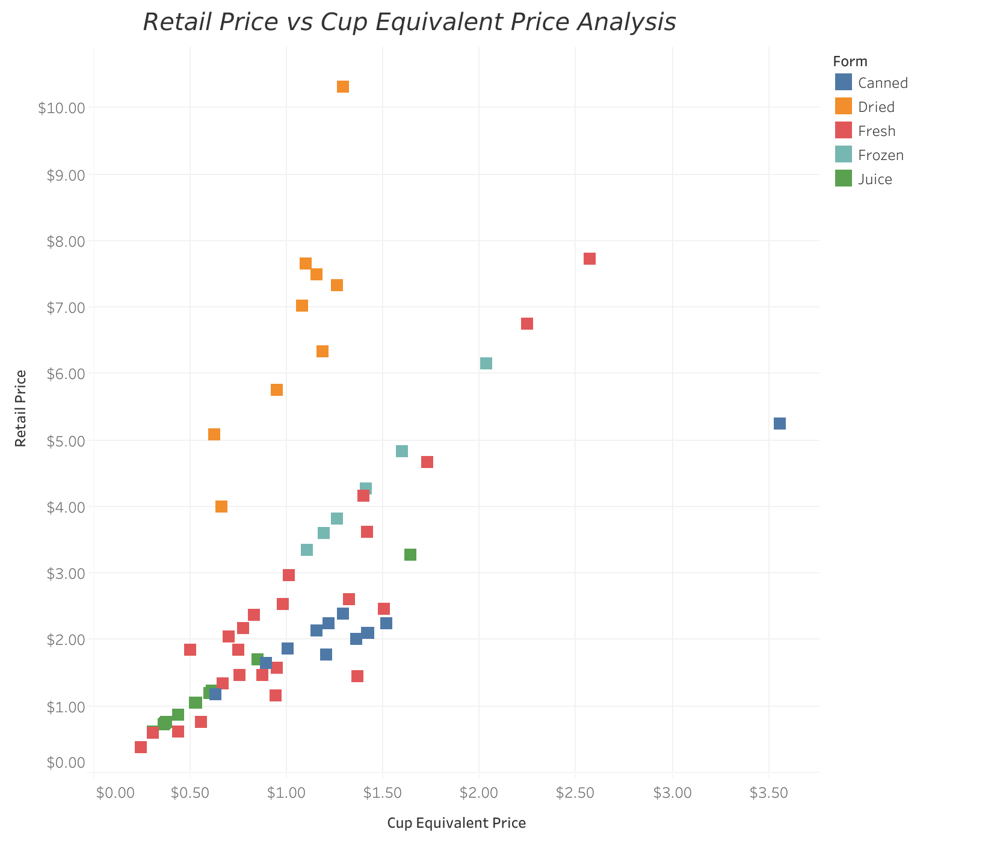

Discover the price trends, comparisons, and insights on various fruits in the US
This dashboard provides an in-depth analysis of the retail prices of various fruits. It highlights price trends between different forms of fruits, compares prices across different units and forms and explores the relationship between price, yield, and serving size. This will also help an individual to make informed decisions on what form of fruit will give them the highest yield.
This chart shows the retail price trends of different fruit varieties over time. We observe how the pricing fluctuates seasonally and regionally.

Fruit: Dried Mango
Price: $10.23 per pound
Key Factors for High Price:
This chart provides an in-depth look at the price per unit of fruits, highlighting pricing disparities across different types of fruits.

This visualization compares the retail price of fruits with their yield, helping us understand how pricing correlates with the quantity of fruits available.

This chart compares the retail price of fruits to their cup equivalent price, providing insights into the value offered per serving.

Based on the analysis, it’s clear that fruit pricing is influenced by a variety of factors, including the form it is sold in and yield rates. The highest price among all the fruits is the Dried Mango. Consumers and producers alike can benefit from understanding these dynamics. For consumers, the comparison of prices per cup offers a better value proposition, while for producers, understanding regional price disparities can help optimize pricing strategies.
Moving forward, further analysis on future price trends, considering factors like climate change and global supply chain shifts, could provide even more valuable insights into the evolving fruit market.